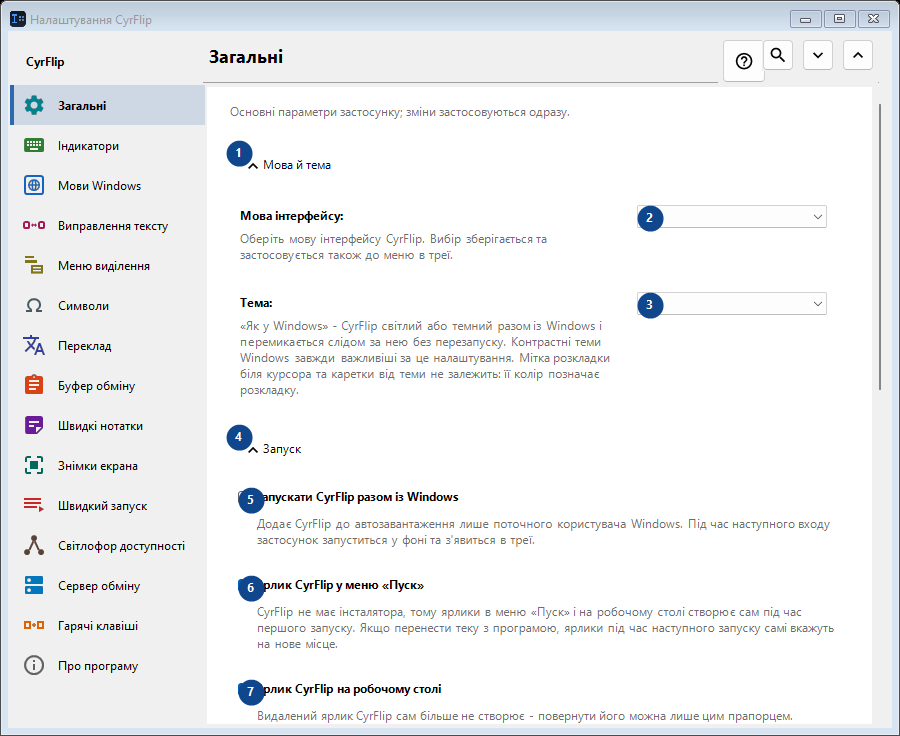
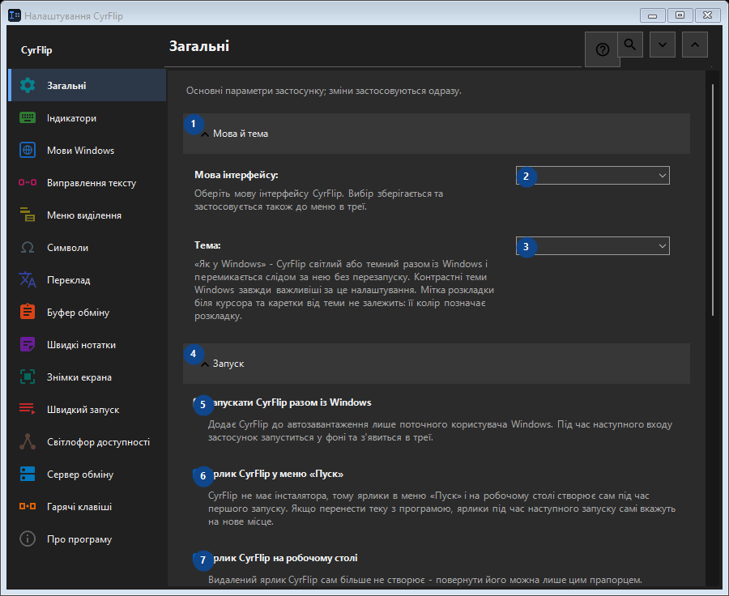

Загальні
Для чого це вікно
Основні параметри застосунку; зміни застосовуються одразу.


Порядок дій
Налаштування застосовуються одразу. Обов’язкового порядку немає; користуйтеся групами нижче.
Елементи
1. Мова й тема
Скористайтеся командою, коли потрібна вказана дія. Прочитайте запит підтвердження перед згодою.
Ваші сполучення клавіш2. Мова інтерфейсу
Виберіть або введіть значення для сусіднього підпису. Перевірте його перед продовженням.
Ваші сполучення клавіш3. Тема
Виберіть або введіть значення для сусіднього підпису. Перевірте його перед продовженням.
Ваші сполучення клавіш4. Запуск
Скористайтеся командою, коли потрібна вказана дія. Прочитайте запит підтвердження перед згодою.
Ваші сполучення клавіш5. Запускати CyrFlip разом із Windows
Додає CyrFlip до автозавантаження лише поточного користувача Windows. Під час наступного входу застосунок запуститься у фоні та з'явиться в треї.
Ваші сполучення клавіш6. Ярлик CyrFlip у меню «Пуск»
CyrFlip не має інсталятора, тому ярлики в меню «Пуск» і на робочому столі створює сам під час першого запуску. Якщо перенести теку з програмою, ярлики під час наступного запуску самі вкажуть на нове місце.
Ваші сполучення клавіш7. Ярлик CyrFlip на робочому столі
Видалений ярлик CyrFlip сам більше не створює - повернути його можна лише цим прапорцем.
Ваші сполучення клавіш8. Живлення й екран
Скористайтеся командою, коли потрібна вказана дія. Прочитайте запит підтвердження перед згодою.
Ваші сполучення клавіш9. Не давати комп'ютеру засинати
Поки ввімкнено, Windows не переходить у сон чи гібернацію під час простою — зручно для довгих завантажень, копіювання чи рендеру. Стан зберігається: забутий увімкненим перемикач не дасть комп'ютеру заснути й після перезапуску - стежити за вашою батареєю CyrFlip не буде.
Ваші сполучення клавіш10. Не блокувати екран (як під час відео)
Екран не гасне й не блокується під час бездіяльності, як під час перегляду відео. Блокування паролем (Win+L або політику безпеки) це не скасовує. Стан зберігається: забутий увімкненим перемикач не дасть екрану згаснути й після перезапуску.
Ваші сполучення клавіш11. Перенесення налаштувань
Скористайтеся командою, коли потрібна вказана дія. Прочитайте запит підтвердження перед згодою.
Ваші сполучення клавіш12. Експортувати налаштування...
Скористайтеся командою, коли потрібна вказана дія. Прочитайте запит підтвердження перед згодою.
Ваші сполучення клавіш13. Імпортувати налаштування...
Скористайтеся командою, коли потрібна вказана дія. Прочитайте запит підтвердження перед згодою.
Ваші сполучення клавіш14. Відновити налаштування до імпорту...
Відновлювати поки нічого: початковий стан CyrFlip зберігає перед першою зміною. Елемент зараз недоступний. Спочатку ввімкніть функцію або виберіть запис.
Ваші сполучення клавіш15. Зберігати резервну копію налаштувань у Документах
Поки увімкнено, CyrFlip зберігає ковзну резервну копію всіх налаштувань у Documents\CyrFlip\Backups - зберігаються три останні. Копія переживає перевстановлення з Microsoft Store: чиста установка знаходить її та пропонує відновити. У файлі ваші адреси, сайти та сценарії - тримайте його в таємниці.
Ваші сполучення клавіш16. Відкрити папку резервних копій
Резервні копії - звичайні файли налаштувань, названі за датою. Відкрийте папку, щоб скопіювати одну або перенести на інший комп'ютер.
Ваші сполучення клавіш